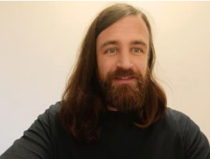

Aleksa Pisteljic
Math Student · Backend Developer · Compiler and Systems Enthusiast

Aleksa is in his final year at the Faculty of Mathematics, University of Belgrade, pursuing a degree in Computer Science with a focus on algorithm design, numerical mathematics, and computer architecture.
His curiosity centers on finite state machines, compiler engineering, and system optimization, and specifically on the interplay between concurrency, optimization, and end-to-end compiler design where all three meet in low-level performance and resource utilization.
On the engineering side, he has built backend systems across several programming paradigms, with a particular fondness for object-oriented design in C++. He is equally comfortable in C, Java, and Python, and picks up new languages without much friction. He works directly with MySQL for database design and query optimization, and gets hands-on with Linux/GNU at the systems level, writing C programs that handle process management, memory, file I/O, and inter-process communication through POSIX APIs.
Before focusing on software, Aleksa earned a Second Prize at the National Mathematics Competition while at Ninth Gymnasium "Mihajlo Petrović Alas" in Belgrade, and he now tutors high school and university students in mathematics, helping them prepare for entrance exams and competitions of their own.
His path to engineering wasn't a straight line through internships. He's waited tables across several summer venues, worked the Belgrade Book Fairs, and independently manages an Airbnb rental, handling everything from guest communication to pricing and maintenance. That work gave him practical experience in logistics and customer satisfaction that carries over directly into how he thinks about systems built for real people.
He works with frameworks and tools including NumPy, python-constraint, Qt, YACC, Bison, flex, Spring Boot, and Boost. He speaks Serbian natively, English at an advanced level, and is building up his Russian. Outside of code, he plays chess and board games, competes in preferans and quizzes, and spends time on the basketball court and the hiking trail.